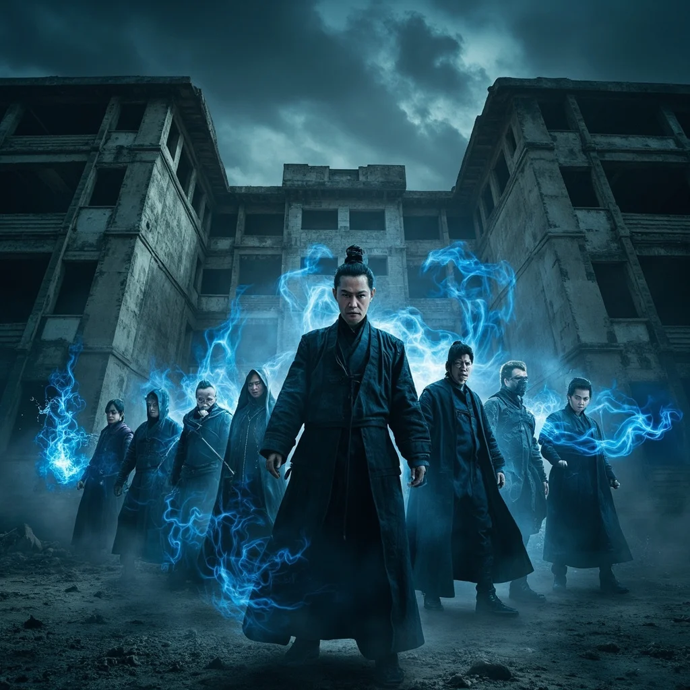
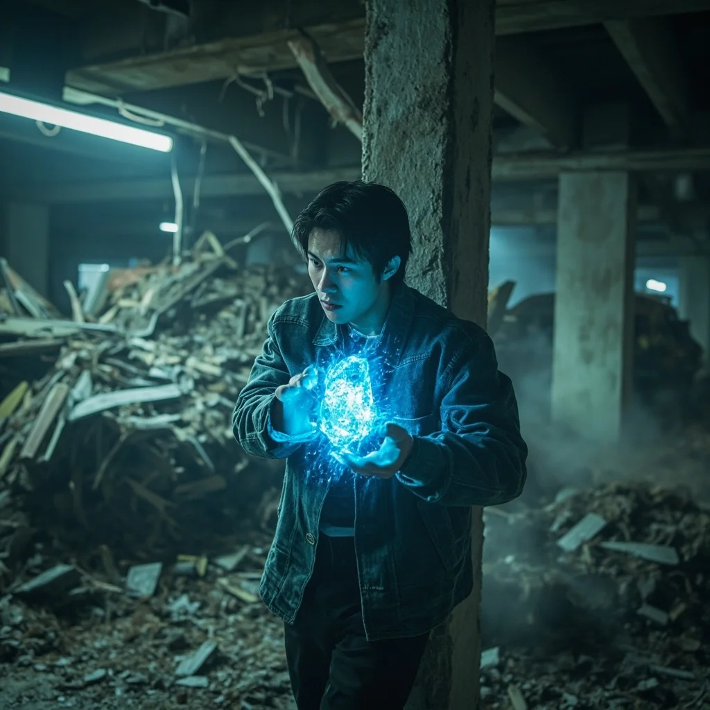
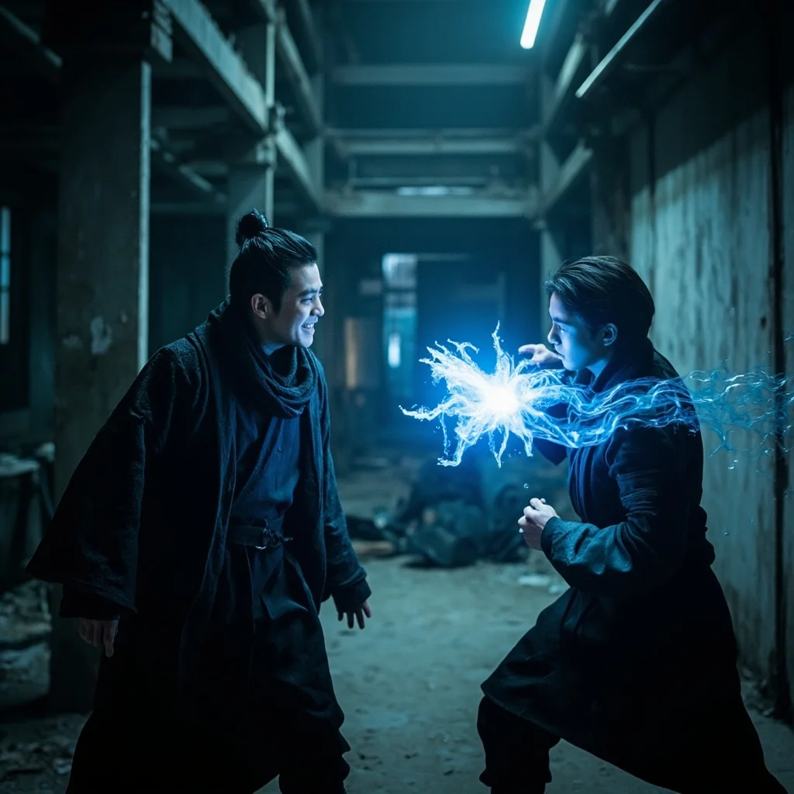
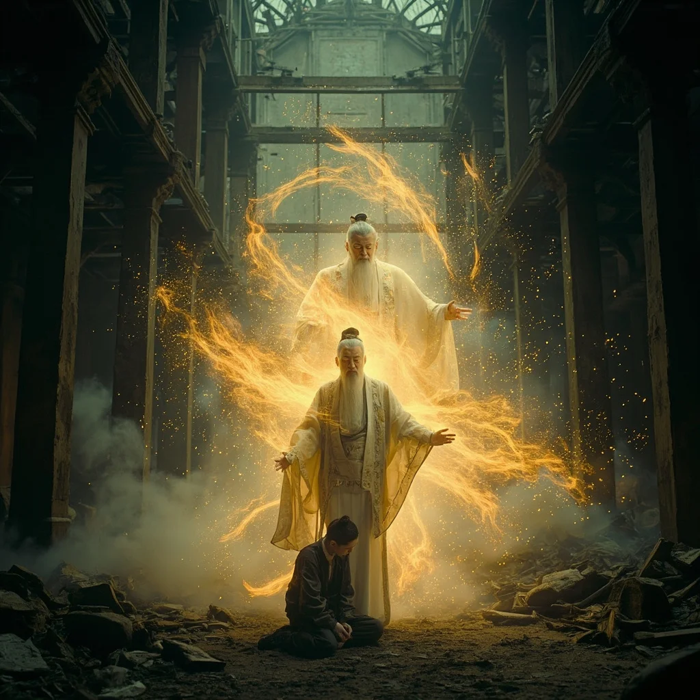

>
>
跳到主要內容
← 文字版
第59章
第61章
📚 目錄
第60章：破序者來襲
🎧 點擊播放有聲朗讀
▶
播放有聲朗讀
場景一
七十二小時的蛻變
林塵躲在廢棄大樓頂層的機房裡，已經連續修煉了整整七十二個小時。天靈珠散發著柔和的藍色光芒，他的額頭上浮現出電路般的量子紋路，胸口的心臟型量子晶片正在有節奏地脈動。短短三天時間，他從練氣期二層突破到三層，在這個末法世界中簡直是奇蹟般的速度。靈芯系統的界面閃爍著藍光：「境界：練氣期三層」「靈芯積分：16」。

場景二
七道黑影包圍
就在林塵思考要接哪個任務之際，靈芯系統突然發出尖銳的警報：「警告！警告！偵測到多名高級靈壓接近！」「威脅等級：極高！」「數量：7人」「領隊修為：練氣期六層」。林塵衝到窗邊，只見七道黑影正從四面八方包抄過來，每個人身上都散發著令人窒息的靈壓。這是破序者！之前在靈池洞穴遇到的中年人，已經把他的消息出賣了。

場景三
承重柱的崩裂
林塵果斷選擇在地下停車場設伏。他找到一根搖搖欲墜的承重柱，將天靈珠中的靈氣集中到一拳之上，猛然擊出！「轟！」藍色能量爆發，承重柱瞬間崩裂，頭頂的天花板開始劇烈搖晃。石塊如雨點般落下，將入口徹底封死。破序者們的怒罵聲從碎石後傳來，但林塵已經消失在黑暗的停車場深處，朝著廢棄工廠的方向狂奔。

場景四
墨影的追殺
廢棄工廠的大門虛掩著，漆黑的內部傳來一道冰冷的聲音：「找到你了。」墨影，破序者追捕行動的負責人，身穿黑色長袍緩緩走出陰影。戰鬥爆發，林塵手持能量刀與墨影激烈交鋒。藍色刀芒與黑色拳風在半空中碰撞，爆發出驚人的衝擊波。林塵故意露出破綻，引誘墨影深入，然後以天靈珠全力反擊——「天靈珠·靈氣衝擊！」一道強大藍光正面擊中墨影！

場景五
神秘白髮老者
墨影吞下禁藥爆氣丹，氣息瘋狂攀升，一拳將林塵轟飛出去。就在千鈞一髮之際，一道蒼老的聲音從工廠深處傳來：「夠了。」一個白髮蒼蒼的老者不知何時出現，身上散發著令人窒息的威壓，僅僅一個眼神就讓墨影全身血液凝固。「滾。」只有一個字。墨影如蒙大赦，帶著同伴們狼狈逃離。老者轉向林塵，眼中閃過一絲讚許：「能以這種修為擊退服用爆氣丹的敵人……你身上那枚靈芯，是老夫數百年前留下的。」